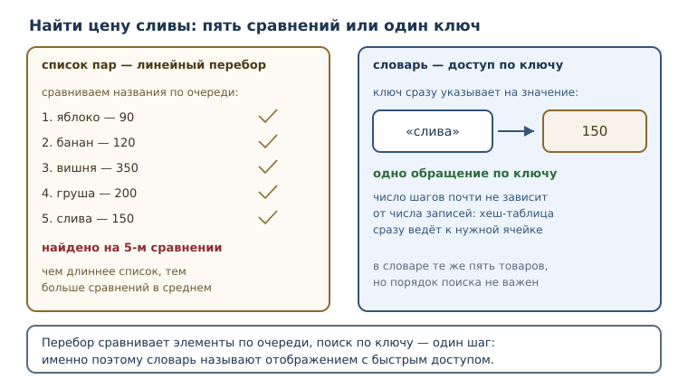
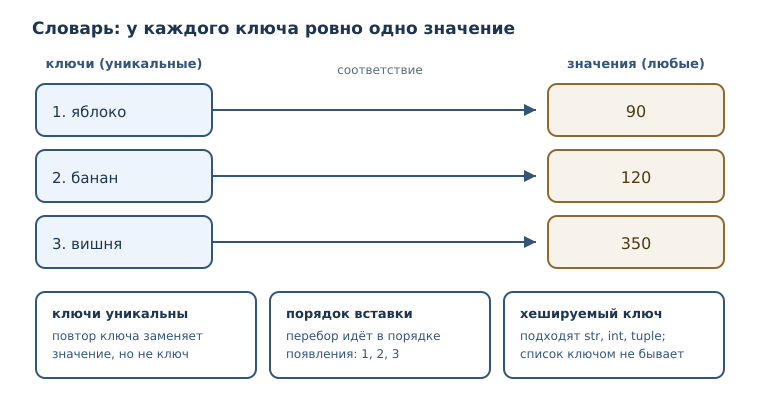

Словари: отображения и структурирование данных
Пары «ключ — значение», методы словарей и моделирование реальных данных: поиск по имени, учёт и записи с полями.
В этой главе
К этому моменту вы умеете хранить множество значений в списке, кортеже, строке и множестве. У всех этих коллекций есть общая черта: элемент находится по позиции или проверяется на вхождение, но у элемента нет собственного имени. Список знает, что цена лежит третьей; он не знает, что третья цена относится к вишне. Как только программа начинает работать не с безымянным набором чисел, а с предметной областью — товарами, счетами, сотрудниками, настройками, — позиции перестают помогать. Нужна другая коллекция: такая, где значение находят по имени, а не по месту.
В этой главе появится словарь — коллекция пар «ключ — значение» и основной инструмент Python для хранения именованных сведений. Вы научитесь создавать словари, безопасно читать значения, перебирать записи и строить из них структуры, похожие на строки таблицы или карточки.
17.1 Что вы сможете после этой главы
- создавать словари и объяснять, чем отображение отличается от последовательности;
- читать значение по ключу и отличать
KeyErrorот «значение не задано»; - пользоваться методами
keys,values,items,get,pop,setdefault,updateи понимать, что каждый из них меняет; - перебирать словарь по ключам, значениям и парам, не ломая его во время обхода;
- складывать из словарей записи с полями и решать задачи учёта и подсчёта.
17.2 Задача, где позиция не помогает
Представьте склад, который хранит цены на три товара. Самое прямолинейное решение — список пар:
catalog = [("яблоко", 90), ("банан", 120), ("вишня", 350)]
Чтобы узнать цену вишни, программа перебирает пары и сравнивает названия.
Это работает, но у решения два изъяна. Первый: чем длиннее каталог, тем
больше сравнений нужно в среднем, потому что поиск идёт по порядку. Второй,
более важный: смысл элемента задаётся его позицией. Стоит поставить новый
товар в начало — и код, который обращался к catalog[2], начнёт показывать
чужую цену.
catalog = [("яблоко", 90), ("банан", 120), ("вишня", 350)]
target = "вишня"
checked = 0
for name, price in catalog:
checked = checked + 1
if name == target:
print("нашли за шагов:", checked, "—", price)
нашли за шагов: 3 — 350
Три шага на три товара — приемлемо для примера, но плохо масштабируется: для тысячи товаров в худшем случае понадобится тысяча сравнений. Нам нужна коллекция, которая находит значение по имени сразу, независимо от размера. Такая коллекция называется отображением.

Отображение — абстракция «ключ → значение»: с каждым ключом связано одно
значение, и значение получают по ключу, а не по позиции. В Python отображение
реализует встроенный тип словарь (dict), и именно он используется в
подавляющем большинстве программ: конфигурации, ответы сетевых служб, записи
в базе, счётчики, индексы.
17.3 Отображение и словарь
Словарь записывается в фигурных скобках: пары разделяются запятыми, ключ и значение — двоеточием.
prices = {"яблоко": 90, "банан": 120, "вишня": 350}
print(prices)
print(type(prices))
{'яблоко': 90, 'банан': 120, 'вишня': 350}
<class 'dict'>
У словаря есть два жёстких правила, из которых вытекает всё остальное.
Ключи уникальны. Один и тот же ключ не может встретиться дважды: словарь хранит не список пар, а соответствие. Если при создании литерала ключ повторён, останется последнее значение.
d = {"a": 1, "a": 2}
print(d)
{'a': 2}
Ключи должны быть хешируемыми. Это требование вы уже знаете по множествам: ключом может быть строка, число, кортеж из неизменяемых значений, но не список. Причина та же — словарь хранит ключи в хеш-таблице. Значением же может быть любой объект, включая изменяемый.
Порядок вставки сохраняется. С версии 3.7 это гарантия языка, а не случайность конкретной реализации: словарь перебирается в том порядке, в котором ключи появились в нём.
d = {}
d["z"] = 1
d["a"] = 2
d["m"] = 3
print(list(d))
d["z"] = 10
print(d)
['z', 'a', 'm']
{'z': 10, 'a': 2, 'm': 3}
Обратите внимание на вторую часть: присваивание по существующему ключу меняет значение, но не переставляет ключ в конец. Порядок — это порядок первого появления ключа.
Как словарь находит ключ
Прямой доступ к значению по ключу возможен благодаря хеш-таблице — той же идее, что и у множеств. Из ключа вычисляется число (хеш), и это число показывает, в какой области таблицы искать пару. Дальше словарь сравнивает найденный ключ с искомым и при совпадении отдаёт значение. Никакого перебора всех пар не происходит: словарь делает почти одинаковое число шагов и на десяти записях, и на миллионе.
Хеш-таблица не обходится без тонкостей: два разных ключа могут дать одно и то же число, и тогда словарю приходится разрешать совпадение. Такие случаи обрабатываются внутри и на работу программы не влияют; важно лишь то, что ключи должны быть хешируемыми и сравнимыми на равенство. Именно поэтому список не годится в ключи: его содержимое можно изменить, и хеш перестанет соответствовать объекту.
Другие способы создать словарь
Литерал в фигурных скобках — не единственный способ. Функция dict умеет
строить словарь из именованных аргументов и из последовательности пар.
print(dict(a=1, b=2))
print(dict([("a", 1), ("b", 2)]))
print(dict())
{'a': 1, 'b': 2}
{'a': 1, 'b': 2}
{}
Форма с именованными аргументами удобна, когда ключи — простые латинские
идентификаторы и заранее известны. Форма из пар пригодится, когда пары
приходят из другого источника: из файла, из результата запроса, из zip.

Сравним словарь с уже известными коллекциями.
| Коллекция | Как найти элемент | Повторы | Порядок |
|---|---|---|---|
| список | по позиции lst[i] |
разрешены | порядок вставки |
| кортеж | по позиции t[i] |
разрешены | порядок вставки |
| множество | проверкой in |
запрещены | не гарантируется |
| словарь | по ключу d[key] |
ключи уникальны | порядок вставки |
17.4 Пары «ключ — значение»
Элемент словаря — пара «ключ — значение»: ключ и связанное с ним значение. Для пары определена одна операция чтения — квадратные скобки с ключом.
prices = {"яблоко": 90, "банан": 120}
print(prices["яблоко"])
90
Если ключа нет, словарь не возвращает «ничего»: он поднимает исключение
KeyError. KeyError — исключение при обращении к отсутствующему ключу
словаря. Это принципиальное решение: молчаливое None скрыло бы опечатку в
имени ключа.
prices = {"яблоко": 90}
print(prices["груша"])
KeyError: 'груша'
Для проверки наличия ключа служит in. Важно: in для словаря проверяет
именно ключи, а не значения.
stock = {"яблоко": 3, "банан": 5}
print("банан" in stock)
print(5 in stock)
print(len(stock))
True
False
2
False во второй строке часто удивляет: значение 5 в словаре есть, но
проверка in спрашивает про ключи. Ключа 5 нет.
17.5 Методы словаря
Метод словаря — операция над словарём, вызываемая через точку. Методы делятся на три группы: одни только читают, другие меняют словарь, третьи совмещают чтение и изменение.
| Метод | Что делает | Меняет словарь |
|---|---|---|
keys() |
даёт ключи | нет |
values() |
даёт значения | нет |
items() |
даёт пары «ключ, значение» | нет |
get(key, default) |
читает значение с запасным вариантом | нет |
pop(key, default) |
удаляет ключ и возвращает значение | да |
popitem() |
удаляет последнюю пару | да |
setdefault(key, default) |
читает, а при отсутствии создаёт ключ | да, если ключа нет |
update(other) |
добавляет пары из другого словаря | да |
clear() |
удаляет все пары | да |
get: чтение без исключения
get — метод получения значения по ключу с запасным значением вместо
исключения. Без второго аргумента запасным значением служит None.
prices = {"яблоко": 90, "банан": 120}
print(prices.get("банан"))
print(prices.get("груша"))
print(prices.get("груша", 0))
120
None
0
get не добавляет ключ в словарь: он только читает. Зато разница между
«ключа нет» и «значение равно None» при этом теряется — оба случая дают
None. Поэтому, если None может быть законным значением, прямое обращение
d[key] информативнее: оно поднимает KeyError только при отсутствии ключа.
get удобен, когда отсутствие ключа и None для вас равнозначны.
Ключи, значения и пары
price = {"a": 1, "b": 2}
print(list(price.keys()))
print(list(price.values()))
print(list(price.items()))
['a', 'b']
[1, 2]
[('a', 1), ('b', 2)]
keys, values и items возвращают не новые списки, а представления над
словарём: они отражают текущее содержимое и не занимают память под копию.
Именно поэтому к ним нельзя обращаться по индексу.
d = {"a": 1}
print(d.items()[0])
TypeError: 'dict_items' object is not subscriptable
Нужен именно список — оберните результат в list(...).
setdefault: прочитать или создать
setdefault пригодится, когда значение надо получить, а при отсутствии ключа
создать. Он возвращает то значение, которое оказалось в словаре после вызова.
d = {"a": 1, "b": 2}
print(d.pop("a"))
print(d.setdefault("c", 3))
print(d.setdefault("c", 99))
print(d)
1
3
3
{'b': 2, 'c': 3}
Второй вызов setdefault("c", 99) вернул 3: ключ уже существовал, и запасное
значение не понадобилось. Это отличает setdefault от безоговорочного
присваивания.
update, pop и удаление
d = {"a": 1}
d.update({"b": 2}, c=3)
print(d)
print(d.pop("b"))
print(d)
{'a': 1, 'b': 2, 'c': 3}
2
{'a': 1, 'c': 3}
pop вернул значение и удалил пару, поэтому третий print показывает словарь
уже без ключа b. Если значение не нужно, а нужен только факт удаления,
удобнее del.
d = {"a": 1, "b": 2}
removed = d.pop("b")
print(removed)
print(d)
2
{'a': 1}
del удаляет пару по ключу и ничего не возвращает; clear очищает словарь
целиком.
17.6 Итерация по словарю
Итерация по словарю — перебор ключей (по умолчанию), значений или пар
через keys, values и items; порядок вставки сохраняется. В цикле for
по словарю переменная получает ключ, а не пару.
stock = {"яблоко": 3, "банан": 5}
for name in stock:
print(name)
for name, count in stock.items():
print(name, count)
яблоко
банан
яблоко 3
банан 5
Во втором цикле пара распаковывается на две переменные — тот же приём, что и с кортежами. Это самый частый способ обойти словарь, когда нужны и ключ, и значение.
Почему нельзя менять словарь во время обхода
Попытка удалить или добавить ключ, пока цикл идёт по словарю, немедленно прерывает программу.
d = {"a": 1, "b": 2}
for key in d:
del d[key]
RuntimeError: dictionary changed size during iteration
Причина в устройстве обхода: словарь обходит таблицу по внутренним ячейкам, и изменение размера таблицы сбивает курсор. Правило простое: во время обхода не меняйте набор ключей. Два безопасных способа — собрать ключи заранее или построить новый словарь.
d = {"a": 1, "b": 2}
for key in list(d):
del d[key]
print(d)
{}
Замена значений при обходе разрешена: набор ключей не меняется.
d = {"a": 1, "b": 2}
for key in d:
d[key] = d[key] * 10
print(d)
{'a': 10, 'b': 20}
17.7 Словари как структурирование данных
Главная практическая сила словаря в том, что он даёт полям имена. Сравните две записи об одном студенте: кортеж и словарь.
student_tuple = ("Анна", 20, 92, "Казань")
student = {"имя": "Анна", "возраст": 20, "балл": 92, "город": "Казань"}
В кортеже смысл элементов держится на порядке и памяти читателя: что такое
92 и почему город последний, видно только из документации. В словаре смысл
записан в самой структуре. Поле можно добавить или удалить, и остальные поля
от этого не сдвинутся.
student = {"имя": "Анна", "возраст": 20, "балл": 92}
student["город"] = "Казань"
student["балл"] = 95
del student["возраст"]
print(student)
{'имя': 'Анна', 'балл': 95, 'город': 'Казань'}
Удаление поля не меняет порядок оставшихся: ключ балл остался на своём месте,
город добавлен в конец.
Счётчик на словаре
Классическая задача — подсчитать, сколько раз встречается каждое слово. Словарь «слово → количество» решает её без поиска по всему списку.
text = "кот пёс кот кот пёс"
counts = {}
for word in text.split():
counts[word] = counts.get(word, 0) + 1
print(counts)
{'кот': 3, 'пёс': 2}
Разберём строку counts[word] = counts.get(word, 0) + 1. Если слово уже
встречалось, get вернёт текущее количество и мы прибавим единицу. Если нет —
вернётся 0, и в словаре появится новый ключ со значением 1. Тот же счётчик
записывают через setdefault:
text = "кот пёс кот"
counts = {}
for word in text.split():
counts.setdefault(word, 0)
counts[word] = counts[word] + 1
print(counts)
{'кот': 2, 'пёс': 1}
Два словаря вместо одной таблицы
Иногда удобно хранить разные свойства одного набора объектов в разных словарях с общими ключами. Так получается подобие таблицы: столбец цен и столбец остатков.
prices = {"яблоко": 90, "банан": 120, "вишня": 350}
stock = {"яблоко": 3, "банан": 5, "вишня": 2}
for name in prices:
print(name, prices[name] * stock[name])
яблоко 270
банан 600
вишня 700
Согласованность таких «столбцов» — забота программиста: словари не знают друг о друге. Если ключи должны совпадать всегда, лучше хранить одну запись с полями, а не два независимых словаря.
17.8 Типичные ошибки
- Обращение через точку.
prices.яблокои дажеprices.apple— ошибка: атрибутов у словаря по именам ключей нет. Нужны квадратные скобки. - Индекс вместо ключа.
d[0]ищет ключ0, а не «первый элемент». Если такого ключа нет, будетKeyError: 0, а неIndexError. - Изменяемый ключ. Список ключом быть не может: словарь требует хешируемый объект. Сообщение об ошибке в новых версиях Python уточнили, но тип исключения прежний.
- Ожидание, что
getсоздаёт ключ.getтолько читает; для создания служитsetdefaultили присваивание. - Пустые фигурные скобки.
{}— пустой словарь, а не пустое множество. Пустое множество записывается какset(). - Изменение словаря во время обхода. Удаление или добавление ключей в
цикле даёт
RuntimeError. - Путаница
inи значений.inпроверяет ключи; для проверки значений нужен отдельный проход поvalues().
Ошибку с изменяемым ключом удобно увидеть, перехватив исключение и напечатав только его тип: текст сообщения в разных версиях Python отличается.
try:
d = {}
d[[1, 2]] = "список"
except TypeError as exc:
print(type(exc).__name__)
TypeError
17.9 Упражнения
1. Прогнозирование вывода
Не запуская код, запишите, что выведет программа. Затем проверьте.
d = {"a": 1, "b": 2, "a": 3}
print(d)
print(list(d))
print(len(d))
Объясните, почему пар стало две, а не три, и почему порядок именно такой.
2. Первый словарь
Создайте словарь phonebook с тремя именами и номерами телефонов. Выведите
номер по имени, затем добавьте четвёртую запись и выведите количество записей.
3. Исправление ошибки
Программа падает:
prices = {"яблоко": 90, "банан": 120}
print(prices["вишня"])
Определите тип исключения, объясните причину и исправьте код так, чтобы при
отсутствии товара печаталось нет в продаже.
4. get или квадратные скобки
Опишите, в каких случаях уместно prices[key], а в каких — prices.get(key).
Приведите по одному примеру на каждый случай и проверьте оба.
5. Счётчик на setdefault
Напишите программу, которая считает частоту символов в строке "абракадабра",
используя setdefault. Выведите результат и проверьте, что сумма всех
количеств равна длине строки.
6. Обход в порядке ключей
Дан словарь оценок. Выведите пары «имя — оценка» в алфавитном порядке имён, не меняя сам словарь.
grades = {"Борис": 4, "Анна": 5, "Вера": 3}
7. Поиск дефекта
Следующий код должен удалить все товары с нулевым остатком, но падает:
stock = {"яблоко": 0, "банан": 5, "вишня": 0}
for name in stock:
if stock[name] == 0:
del stock[name]
Объясните причину падения и предложите два исправления.
8. Слияние словарей
Даны два словаря настроек: значения по умолчанию и пользовательские. Получите итоговый словарь, в котором пользовательские значения заменяют значения по умолчанию, и выведите его. Какой метод словаря подходит лучше всего?
9. Учёт на складе
Напишите программу, которая ведёт учёт склада:
- начальный словарь
stockсодержит три товара с остатками; - товар приходит: увеличьте остаток, а если товара не было — добавьте его;
- товар уходит: уменьшите остаток, но не ниже нуля;
- в конце выведите все товары, у которых остаток меньше трёх, и общее количество единиц на складе.
Решите задачу без изменения словаря во время обхода.
10. Почему словарь быстрее списка пар
Объясните своими словами, почему поиск по ключу в словаре не становится линейно медленнее при росте числа записей, а поиск по списку пар — становится. Подтвердите рассуждение примером: посчитайте, сколько сравнений сделает цикл для списка из пяти пар при поиске последнего элемента и сколько шагов нужно словарю.
17.10 Проверка понимания
- Чем отображение отличается от последовательности? Что из них словарь?
- Почему ключи уникальны, а значения — нет? Что произойдёт при попытке задать один ключ дважды в литерале?
- Чем
KeyErrorполезнее молчаливогоNoneпри чтении по ключу? - Что проверяет
inдля словаря и как проверить наличие значения? - Чем
setdefaultотличается отget? Приведите пример, где различие видно. - Почему нельзя удалять ключи во время обхода словаря и какие есть безопасные обходные пути?
- Зачем хранить запись в словаре, если можно взять кортеж?
17.11 Что дальше
Словарь даёт именованный доступ к значениям, но пока все значения в наших примерах были простыми: числа и строки. Реальные сведения редко бывают плоскими — чаще значение само оказывается коллекцией: списком оценок, вложенным словарём адреса, набором тегов. Тогда появляется новый вопрос: сколько копий структуры существует в памяти и что произойдёт, если изменить одну из них. Об этом — в следующей главе о ссылках, алиасах и копировании.